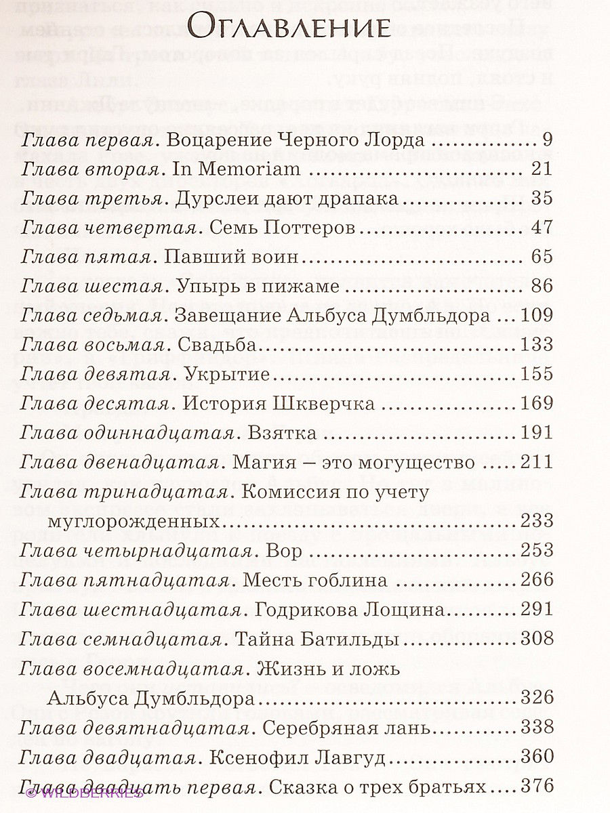

Эти двое, появившись словно бы ниоткуда, пару секунд простояли в нескольких шагах друг против друга на узкой, освещённой луной тропе. Стояли не шевелясь, наставив один в грудь другого волшебные палочки, а затем, когда каждый понял, кто перед ним, убрали палочки под мантии и торопливо двинулись в одном направлении.
— Есть новости? — спросил тот, что был выше ростом.
— Самые лучшие, — ответил Северус Снегг.
Вдоль тропы шли слева низкие кусты дикой ежевики, а справа — высокая ухоженная живая изгородь. Длинные мантии мужчин колыхались, заплетаясь вокруг лодыжек.
— Я уж боялся, что опоздаю, — сказал Яксли, грубое лицо которого то освещалось светом луны, пробивавшимся между нависшими над тропой ветвями, то снова погружалось во тьму. — Дорога оказалась труднее, чем я ожидал. Впрочем, надеюсь, он будет доволен. Вы и вправду думаете, что приём нас ожидает хороший?
Снегг кивнул, однако в подробности вдаваться не стал. Они повернули направо, на широкую подъездную дорожку, в которую упёрлась тропа. Живая изгородь, повернувшая вместе с ними, вскоре оборвалась у высоких кованых ворот, преградивших двум мужчинам путь. Однако они не замедлили шага: оба молча подняли в подобии приветствия левые руки и прошли сквозь тёмный, словно обратившийся перед ними в дымку тумана металл.
Теперь звуки их шагов заглушались тянувшимися по обеим сторонам дорожки густыми тисами. Справа послышалось какое-то шуршание. Яксли снова извлёк из-под мантии палочку, повёл ею над головой своего спутника, но источником шума оказался всего лишь белый павлин, величаво вышагивавший по тисовой изгороди.
— А он всегда умел недурно устраиваться, наш Люциус. Павлины… — фыркнул Яксли, пряча под мантию палочку.
В конце прямой дорожки вырос из темноты большой, красивый загородный дом с мерцавшим в ромбовидных окнах первого этажа светом. Где-то в тёмном парке журчал за тисовой изгородью фонтан. Гравий похрустывал под ногами Снегга и Яксли, торопливо шагавших к парадным дверям, которые при их приближении распахнулись будто сами собой.
Почти весь каменный пол просторного, тускло освещённого и прекрасно убранного вестибюля покрывал толстый ковёр. Снегг и Яксли пересекли его, провожаемые взглядами бледных людей, изображённых на висевших по стенам портретах.Двое мужчин на миг остановились, замявшись, у тяжёлой деревянной двери, ведущей в следующую комнату, затем Снегг повернул бронзовую ручку.
Гостиную заполняли безмолвные люди, сидевшие вокруг длинного, пышно изукрашенного стола. Вся прочая мебель была бесцеремонно сдвинута к стенам. Освещало гостиную пламя, ревевшее в мраморном камине, над которым висело большое зеркало в резной золочёной оправе. Снегг и Яксли немного помедлили на пороге. Глаза их, постепенно привыкавшие к тусклому освещению, были прикованы к самой странной из особенностей этой комнаты: к безжизненному, судя по всему, человеческому телу, которое висело вниз головой над столом и медленно кружилось, словно на невидимой верёвке, отражаясь и в зеркале, и в полированной поверхности стола. Никто из сидевших за столом на тело не смотрел, кроме бледного юноши, расположившегося почти прямо под ним. Похоже, он не мог удержаться от того, чтобы примерно раз в минуту не бросить на него взгляд.
— Яксли, Снегг, — произнёс высокий, звонкий голос того, кто сидел во главе стола. — Ещё немного, и вы опоздали бы.
Сказавший это сидел перед самым камином, отчего двум вошедшим в гостиную мужчинам было поначалу трудно различить что-либо, кроме общего его силуэта. Однако по мере их приближения лицо его выступало из мрака — голое, змееподобное, с узкими прорезями вместо ноздрей и блестящими красными глазами с вертикалями зрачков. Бледен он был до того, что казался светящимся, точно жемчуг.
— Северус, сюда! — приказал Волан-де-Морт, указывая на кресло справа от себя. — Яксли — рядом с Долоховым.
Двое мужчин заняли названные им места. Большинство сидевших за столом провожали глазами Снегга — к нему первому и обратился Волан-де-Морт:
— Итак?
— Мой Лорд, Орден Феникса намеревается перевести Гарри Поттера из нынешнего его укрытия в субботу, при наступлении вечера.
Это известие пробудило в сидевших вокруг стола интерес почти осязаемый: одни замерли, другие заёрзали — и все не отрывали глаз от Снегга и Волан-де-Морта.
— В субботу… при наступлении вечера… — повторил Волан-де-Морт. Красные глаза его вглядывались в чёрные глаза Снегга с такой неистовой силой, что некоторые из смотревших на них предпочли отвести взгляды, опасаясь, похоже, обратиться под её воздействием в пепел. Снегг, однако же, смотрел в лицо Волан-де-Морта спокойно, и спустя секунду-другую безгубый рот его господина искривился в подобии улыбки. — Хорошо. Очень хорошо. И сведения эти получены…
— Из источника, о котором мы с вами говорили, — сказал Снегг.
— Мой Лорд, — Яксли склонился над длинным столом, вглядываясь в Волан-де-Морта и Снегга. Все повернулись к нему. — Я слышал иное, мой Лорд.
Яксли замолк, ожидая ответа, однако Волан-де-Морт не произнёс ни слова, и Яксли продолжил:
— Долиш, мракоборец, обмолвился мимоходом, что Поттер не стронется с места до тридцатого, до вечера, который предшествует его семнадцатилетию.
Снегг улыбнулся:
— Мой источник сообщает, что существует несколько планов, направленных на то, чтобы сбить нас с толку. Полагаю, это один из них. На Долиша наверняка наложено заклятие Конфундус. И уже не впервые — давно известно, что он легко поддаётся этому заклятию.
— Уверяю вас, мой Лорд, Долиш говорил с полной уверенностью, — сказал Яксли.
— При таком заклятии это вполне естественно, — отозвался Снегг. — Уверяю вас, Яксли, Мракоборческий центр уже не имеет никакого отношения к защите Гарри Поттера. Орден считает, что в Министерстве полным-полно наших агентов.
— В кои-то веки и Орден оказался прав, а? — произнёс сидевший неподалёку от Яксли коренастый мужчина и издал хриплый смешок, эхом раскатившийся вдоль стола.
Волан-де-Морт даже не усмехнулся.
Кровь всё текла и текла. Сжимая правую руку левой и негромко ругаясь, Гарри толкнул плечом дверь своей комнаты. И тут же услышал хруст раздавленного ногой фарфора: он наступил на стоявшую прямо перед дверью чашку давно остывшего чая.
— Какого…
Гарри оглянулся, но лестничная площадка дома номер четыре по Тисовой улице была пуста. Надо полагать, чашка чаю перед дверью отвечала представлениям Дадли о мине-ловушке. Держа кровоточащую руку над головой, Гарри сгрёб другой рукой осколки фарфора и ссыпал их в стоявшую прямо за дверью, едва различимую в сумерках мусорную корзину. А потом протопал в ванную комнату, чтобы сунуть порезанный палец под кран.
Глупо, бессмысленно, обидно, что ещё четыре дня нельзя колдовать… Впрочем, вряд ли он справился бы с порезом своими силами. Лечить раны он так и не научился, и это — если вспомнить о его ближайших планах — серьёзный пробел в полученном им магическом образовании. Поставив в уме галочку — надо бы выяснить у Гермионы, как это делается, — Гарри отодрал большой ком туалетной бумаги, протёр им пол в коридоре, собрав столько пролитого чая, сколько смогла впитать бумага, а затем вернулся в спальню и захлопнул за собой дверь. Это утро Гарри провёл, опустошая свой школьный чемодан, — впервые с тех пор, как он уложил его шесть лет назад. В начальные годы учёбы Гарри просто выгребал из него примерно три четверти содержимого, заменяя его новыми вещами и оставляя на дне разного рода мусор: старые гусиные перья, сушёные жучиные глаза, лишившиеся пары и ставшие маловатыми носки. Так вот, несколько минут назад Гарри сунул во всю эту муть правую руку и вдруг ощутил острую боль в безымянном пальце, а вытянув руку наружу, увидел, как из него течёт, и течёт сильно, кровь. Глупо, бессмысленно, обидно, что ещё четыре дня нельзя колдовать… Впрочем, вряд ли он справился бы с порезом своими силами. Лечить раны он так и не научился, и это — если вспомнить о его ближайших планах — серьёзный пробел в полученном им магическом образовании. Поставив в уме галочку — надо бы выяснить у Гермионы, как это делается, — Гарри отодрал большой ком туалетной бумаги, протёр им пол в коридоре, собрав столько пролитого чая, сколько смогла впитать бумага, а затем вернулся в спальню и захлопнул за собой дверь. Это утро Гарри провёл, опустошая свой школьный чемодан, — впервые с тех пор, как он уложил его шесть лет назад. В начальные годы учёбы Гарри просто выгребал из него примерно три четверти содержимого, заменяя его новыми вещами и оставляя на дне разного рода мусор: старые гусиные перья, сушёные жучиные глаза, лишившиеся пары и ставшие маловатыми носки. Так вот, несколько минут назад Гарри сунул во всю эту муть правую руку и вдруг ощутил острую боль в безымянном пальце, а вытянув руку наружу, увидел, как из него течёт, и течёт сильно, кровь.
Дальше Гарри действовал с большей осторожностью. Опустившись на колени, он порылся на дне чемодана, нашёл старый значок, на котором потускневшая надпись: «СЕДРИКА ПОДДЕРЖИМ — ОН НАСТОЯЩИЙ ЧЕМПИОН» — ещё сменялась время от времени другой, столь же потускневшей: «ГАРРИ ПОТТЕР, ТЫ СМЕРДЯК», потёртый и потрескавшийся вредноскоп и золотой медальон со спрятанной в нём запиской от Р. А. Б., и наконец отыскал то, что рассадило ему палец. И сразу узнал его. Это был осколок — длиной в два дюйма — зачарованного зеркала, которое подарил ему покойный крёстный отец, Сириус. Гарри отложил осколок в сторону, осторожно ощупал чемодан. Пытаясь отыскать ещё какие-нибудь остатки этого подарка, однако, кроме стеклянной пыли, прилипшей к прочему сору и поблёскивавшей, подобно песочку, ничего не нашёл.
Гарри присел на корточки, осмотрел повредивший ему палец осколок, но, кроме отражения собственных ярких зелёных глаз, ничего в нём не увидел. Тогда он положил осколок поверх лежавшего на кровати утреннего номера «Ежедневного пророка» и попытался стряхнуть с себя вызванные находкой разбитого зеркала горестные воспоминания и печаль, занявшись остатками мусора, покрывавшего дно чемодана.
На разбор его ушёл ещё час. Гарри выбрасывал то, от чего никакой пользы уже точно не будет, складывал в две кучки вещи, которые ещё могли, хотя бы теоретически, пригодиться. Школьная форма, костюм, в котором он выходил на игру в квиддич, пергамент, перья и большая часть учебников грудой легли в углу комнаты, где им и предстояло остаться. Интересно, как поступят с ними дядя и тётка? Наверное, сбагрят куда-нибудь в самый тёмный час ночи, будто улики, свидетельствующие о некоем злодейском преступлении. Свою магловскую одежду, мантию-невидимку, набор для приготовления зелий, кое-какие книги, подаренный Хагридом альбом с фотографиями, пачку писем и волшебную палочку Гарри уложил в старый рюкзачок. В наружный карман его пошла Карта Мародёров и медальон с запиской от Р. А. Б. Это почётное место медальон получил не по причине его ценности, которой он, собственно говоря, и не обладал, но по причине цены, которую пришлось за него заплатить.
В итоге осталось разобраться лишь с объёмистой кипой газет, лежавшей на столе рядом с белой совой Гарри, Буклей. Газет было ровно столько, сколько дней провёл он этим летом на Тисовой улице.
Гарри поднялся с пола, потянулся, подошёл к столу. Букля не шелохнулась. Он начал перебирать газеты, отбрасывая номер за номером на груду ненужного мусора. Сова спала или притворялась спящей — она сердилась на Гарри за то, что в последнее время он выпускал её из клетки лишь ненадолго.
Когда газет осталось совсем немного, Гарри начал перебирать их с несколько большим вниманием — ему нужен был номер, пришедший почти сразу после его приезда сюда, тот, на первой странице которого коротко сообщалось об отставке преподававшей в Хогвартсе магловедение Чарити Бербидж. И наконец он этот номер нашёл. Открыв его на десятой странице, Гарри уселся за стол, чтобы перечитать статью, которую искал.
Элфиас Дож
ПАМЯТИ АЛЬБУСА ДАМБЛДОРА
Я познакомился с Альбусом в одиннадцать лет, в первый наш хогвартсовский день. Приязнь, возникшая между нами, несомненно, объяснялась тем, что в школе мы оба ощущали себя чужаками. Я перед самым приездом туда переболел драконовой оспой, и, хотя был уже незаразен, моя рябая, зеленоватого оттенка физиономия популярности мне среди учеников отнюдь не прибавляла. Приязнь, возникшая между нами, несомненно, объяснялась тем, что в школе мы оба ощущали себя чужаками. Я перед самым приездом туда переболел драконовой оспой, и, хотя был уже незаразен, моя рябая, зеленоватого оттенка физиономия популярности мне среди учеников отнюдь не прибавляла. Что касается Альбуса, он появился в Хогвартсе обременённым нежелательной известностью. Едва ли не за год до того отца Альбуса, Персиваля, посадили в тюрьму за жестокое, подробно описанное в прессе нападение на трёх молодых маглов.
Альбус никогда не пытался отрицать, что его отец (которому предстояло скончаться в Азкабане) повинен в этом преступлении. Напротив, когда я набрался храбрости и спросил его о случившемся, он сказал, что считает отца повинным в преступлении. Однако рассказывать что-либо об этом прискорбном инциденте Дамблдор отказывался, хоть многие и пытались втянуть его в такой разговор. Кое-кто склонен был восхвалять поступок его отца, полагая, что и Альбус тоже ненавидит маглов. Но они сильно заблуждались. Всякий, кто знал Альбуса, подтвердит, что он не питал к маглам даже малейшей неприязни. На самом деле из-за решительных выступлений в защиту прав маглов Альбус нажил в дальнейшем немало врагов.
Впрочем, прошло лишь несколько месяцев, и известность, приобретённая Альбусом, затмила известность его отца. К концу первого учебного года его уже называли не сыном маглоненавистника, но ни больше ни меньше как самым блестящим учеником, какого когда-либо видела наша школа. Те из нас, кому выпала честь стать его друзьями, приобрели очень многое, всего лишь наблюдая за ним, — не говоря уж о помощи и поддержке, на которые он никогда не скупился. Много позже он признался мне, что даже тогда считал работу учителя величайшей радостью в жизни.
Альбус не только получал все почётные награды, какие были учреждены школой, очень скоро он вступил в деятельную переписку с самыми знаменитыми волшебниками того времени, включая прославленного алхимика Николаса Фламеля, известного историка Батильду Бэгшот и теоретика магии Адальберта Уоффлинга. Несколько написанных им статей были приняты к публикации такими научными журналами, как «Трансфигурация сегодня», «Проблемы чароведения» и «Практика зельеварения». Все полагали, что Дамблдора ожидает блестящая и стремительная карьера, единственный вызывавший споры вопрос состоял в том, когда именно он станет министром магии. В последующие годы часто ходили разговоры, что он вот-вот займёт этот пост, однако подобного рода амбиций Дамблдор никогда не имел.
Через три года после нашего поступления в Хогвартс в школе появился и брат Альбуса, Аберфорт. Особым сходством они не отличались. Аберфорт не был большим книгочеем и, в отличие от Альбуса, предпочитал разрешать разногласия не разумной беседой, а дуэлью. Было бы, однако, совершенно неверным полагать, как делали многие, что дружбы между братьями не существовало. Они ладили друг с другом в той мере, в какой это возможно для столь несхожих юношей. К тому же, если говорить со всей прямотой, жизнь в тени Альбуса была для Аберфорта испытанием не самым простым. Неизменное превосходство Альбуса даже для его друзей оборачивалось своего рода травмой, а уж для брата оно было тем более неприятным.
Выйдя из Хогвартса, мы с Альбусом собрались отправиться вместе в традиционное странствие по белому свету — посетить заграничных волшебников, понаблюдать за их работой, а уже после этого начать наши собственные карьеры. Однако нам помешала трагедия. Перед самым началом задуманного нами путешествия скончалась мать Альбуса, Кендра, оставив его главой и единственным кормильцем семьи. Я отложил свой отъезд на срок, достаточный для того, чтобы почтить память Кендры присутствием на её похоронах, а затем отправился в странствие, теперь уже одиночное. О том, чтобы не получивший в наследство сколько-нибудь значительных средств Альбус, на попечении которого остались к тому же младшие брат и сестра, сопровождал меня, теперь не могло быть и речи.
По дому пронеслось эхо от хлопка входной двери, а следом крик: «Эй, ты!» За шестнадцать лет Гарри привык к подобной манере обращения и потому не сомневался, к кому относится этот призыв, но спешить с ответом на него не стал. Он всё ещё вглядывался в осколок зеркала, в котором увидел, как ему на долю секунды показалось, глаз Дамблдора. И только после того как дядя взревел: «ПАРЕНЬ!», Гарри медленно поднялся на ноги и направился к двери своей спальни, остановившись, впрочем, чтобы добавить осколок к уложенным в рюкзак вещам, которые он собирался взять с собой. — А ты не торопишься! — прорычал Вернон Дурсль, когда Гарри появился на верху лестницы. — Спускайся, надо поговорить! Гарри, глубоко засунув руки в карманы джинсов, сошёл по ступеням лестницы. В гостиной он обнаружил Дурслей в полном составе. Одеты они были по-дорожному: дядя Вернон в бежевую куртку на молнии, тётя Петунья в аккуратненькое розово-оранжевое пальто, а Дадли — крупный, светловолосый и мускулистый двоюродный брат Гарри — в кожаный пиджак. — Да? — спросил Гарри. — Сядь! — приказал дядя Вернон. Гарри слегка приподнял брови. — Пожалуйста! — прибавил дядя Вернон, поморщившись, как если бы это слово оцарапало ему горло. Гарри сел. Он полагал, что знает, чего ему следует ждать. Дядя принялся расхаживать взад и вперёд по гостиной. Тётя Петунья и Дадли провожали его встревоженными взглядами. И наконец, сосредоточенно наморщив большое багровое лицо, дядя Вернон остановился перед Гарри и объявил: — Я передумал. — Какой сюрприз, — отозвался Гарри. — Оставь этот тон… — визгливо начала тётя Петунья, но дядя Вернон махнул в её сторону рукой, и она умолкла. — Всё это полная чушь, — произнёс дядя Вернон, вглядываясь в Гарри маленькими, свинячьими глазками. — Не верю ни одному слову. — Не верю ни одному слову. Мы никуда не едем, остаёмся. Гарри смотрел на дядю, ощущая одновременно и раздражение, и веселье. За последние четыре недели Вернон Дурсль передумывал каждые двадцать четыре часа и при этом всякий раз либо затаскивал вещи в машину, либо вытаскивал их из неё. Больше всего понравился Гарри тот случай, когда дядя Вернон, не знавший, что Дадли, в очередной раз укладывая чемодан, засунул в него свои гимнастические гири, попытался забросить его в багажник и рухнул на землю, ревя от боли и зверски ругаясь. — По твоим словам, — произнёс Вернон Дурсль, снова начиная расхаживать по гостиной, — нам — Петунье, Дадли и мне — грозит опасность со стороны… со стороны… — Да, со стороны «одного из наших», — сказал Гарри. — Ну так вот, я в это не верю, — повторил дядя Вернон, опять остановившись перед Гарри. — Я целую ночь пролежал без сна, всё обдумал и понял: это заговор, ты хочешь завладеть домом. — Домом? — переспросил Гарри. — Каким ещё домом? — Вот этим самым! — взвизгнул дядя Вернон, и на лбу его запульсировала вена. — Нашим домом! В здешнем районе цены на жилье бешено растут! Ты хочешь убрать нас отсюда, а после проделать какой-нибудь фокус-покус. Мы и опомниться не успеем, а ты уже перепишешь дом на своё имя и… — Вы спятили? — поинтересовался Гарри. — Заговор, чтобы завладеть домом? Вы действительно настолько глупы или просто притворяетесь? — Да как ты смеешь! — запищала тётя Петунья, однако Вернон снова махнул ей рукой: похоже, пренебрежительное отношение к его личному достоинству представлялось ему пустяком в сравнении с опасностью, которую он обнаружил. — На случай, если вы забыли, — сказал Гарри, — у меня уже есть дом, оставленный мне крёстным отцом. С какой же стати я пожелал бы вашего? Из-за переполняющих его счастливых воспоминаний? На сей раз Вернон промолчал. «Похоже, — подумал Гарри, — этот аргумент показался дядюшке убедительным». — Ты уверяешь, — сказал, снова начиная расхаживать, дядя Вернон, — что этот ваш лорд, как его там… — Волан-де-Морт, — нетерпеливо подсказал Гарри, — мы обсуждали всё это уже раз сто. И тут не мои уверения, тут факт. Дамблдор говорил вам об этом ещё прошлым летом, и Кингсли с мистером Уизли… Вернон Дурсль сердито втянул голову в плечи, и Гарри понял: дядя пытается отогнать воспоминания о нежданном визите двух взрослых волшебников, случившемся в один из первых дней летних каникул. Появление в их доме Кингсли Бруствера и Артура Уизли стало для Дурслей потрясением самого неприятного рода. Впрочем, Гарри готов был признать, что, поскольку мистер Уизли разнёс когда-то в пух и прах половину их гостиной, трудно ожидать, чтобы новый его визит порадовал дядю Вернона. — …Кингсли с мистером Уизли тоже вам всё объяснили, — безжалостно продолжал Гарри. — Как только мне исполнится семнадцать лет, защитные чары, ограждающие этот дом, уничтожатся, и вы окажетесь в не меньшей опасности, чем я. Орден не сомневается в том, что Волан-де-Морт возьмётся за вас — либо для того, чтобы постараться выпытать, где я, либо решив, что, если вы станете его заложниками, я приду и попытаюсь вас спасти. Взгляды дяди Вернона и Гарри встретились. Юноша был уверен, что в этот миг оба они думают об одном. Затем дядя Вернон опять пустился в путь по гостиной, а Гарри возобновил уговоры: — Вам необходимо спрятаться, и Орден готов в этом помочь. Вам предлагают очень серьёзную защиту, лучшую из существующих. Дядя Вернон молчал, продолжая расхаживать взад-вперёд. Снаружи солнце уже висело прямо над живой изгородью из бирючины. Газонокосилка соседа снова заглохла. — Я полагал, у вас существует Министерство магии, так? — вдруг резко спросил Вернон Дурсль.— Я полагал, у вас существует Министерство магии, так? — вдруг резко спросил Вернон Дурсль. — Существует, — удивившись, ответил Гарри. — Ну так почему же оно не может нас защитить? По-моему, мы, безобидные жертвы, повинные только в том, что дали приют человеку, на которого кто-то охотится, вправе рассчитывать на защиту правительства! Гарри невольно рассмеялся. Как это типично для дяди — возлагать надежды на официальное учреждение, даже если оно относится к миру, который дядя ни во что не ставит и которому не доверяет. — Вы же слышали, что говорили мистер Уизли и Кингсли, — ответил Гарри. — Мы думаем, что в Министерство проникли вражеские агенты. Теперь дядя Вернон прохаживался вдоль камина, вздыхая так тяжело, что подрагивали его большие чёрные усы. Лицо дяди так и оставалось багровым от умственных усилий. — Ну хорошо, — произнёс он, в который раз останавливаясь перед Гарри. — Хорошо, допустим на минуту, что мы примем эту защиту. Но я всё равно не понимаю, почему нас не может охранять этот ваш Кингсли. Гарри еле удержался, чтобы не завести глаза к потолку. Этот вопрос он тоже слышал уже с полдесятка раз. — Я же вам говорил, — стиснув зубы, ответил он. — Кингсли охраняет маг… вашего премьер-министра. — Ну да, потому что он самый лучший! — подтвердил дядя Вернон и ткнул пальцем в тёмный экран телевизора. Дурсли заметили в выпуске новостей Кингсли, скромно шагавшего за посещавшим какую-то больницу магловским премьер-министром. И это плюс то обстоятельство, что Кингсли сноровисто носил одежду маглов, не говоря уж об успокоительных тонах его низкого, неторопливого голоса, заставляло Дурслей относиться к нему куда лучше, чем к любому другому волшебнику. Правда, они ещё ни разу не видели его с любимой серьгой в ухе. — Ну, в общем, он занят, — сказал Гарри. — Но Гестия Джонс и Дедалус Дингл более чем способны справиться с этой работой… — Если бы они нам хоть документики какие показали… — начал дядя Вернон, однако терпение Гарри уже лопнуло. Вскочив на ноги, он подошёл к дяде и теперь сам ткнул пальцем в пустой экран телевизора. — Эти несчастные случаи — никакие не случаи: катастрофы, взрывы, крушения поездов и всё, что ещё произошло с того времени, когда вы в последний раз смотрели выпуск новостей. Люди исчезают и гибнут, и за всем стоит он, Волан-де-Морт. Я говорил вам множество раз: он убивает маглов просто ради забавы. Даже туманы — и их нагоняют дементоры, а если вы не помните, что они собой представляют, спросите у вашего сына! Руки Дадли инстинктивно вздёрнулись вверх, чтобы прикрыть ладонями рот. Потом, сообразив, что на него смотрят и Гарри, и родители, Дадли медленно опустил ладони и спросил: — А их… ещё больше? — Больше? — усмехнулся Гарри. — Ты имеешь в виду больше тех двух, что на тебя напали? Конечно, больше. Их сотни, может быть, теперь уже тысячи, они же питаются отчаянием и страхом… — Ну ладно, ладно! — гаркнул Вернон Дурсль. — Ты убедил нас… — Надеюсь, — сказал Гарри, — потому что, как только мне исполнится семнадцать, все они — Пожиратели смерти, дементоры, может быть, даже инферналы, а это трупы, околдованные Тёмным магом, — отыщут вас где угодно и набросятся всем скопом. И если вы хорошо помните последнюю вашу попытку справиться с магом, то, думаю, согласитесь с тем, что вам потребуется помощь. Наступило недолгое молчание, в котором словно прозвучало далёкое эхо треска вышибаемой Хагридом входной двери, долетевшее сюда сквозь прошедшие с того дня годы. Тётя Петунья не сводила глаз с Вернона, Дадли — с Гарри. Наконец дядя Вернон выпалил: — А как же моя работа? А школа Дадли? Я что, должен бросить всё на свете ради горстки болтающихся без дела волшебников? — Вы так и не поняли? — воскликнул Гарри.
